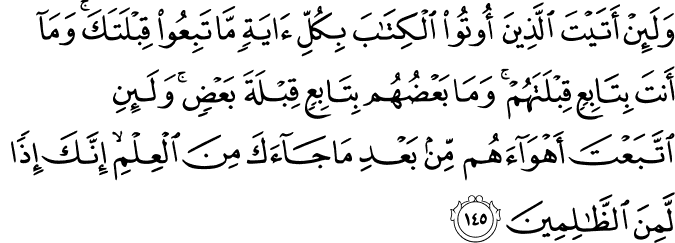

আমরা অনেক সময় মুসলিমদের ভেতরকার সমস্যা নিয়ে এত বেশি হতাশ হয়ে পড়ি যে, অন্য ধর্মের অনুসারীদের মধ্যেও যে ব্যাপক সমস্যা আছে, তা ভুলে যাই। এই সুযোগে কিছু সুধীবৃন্দ এবং নাস্তিকরা, অমুসলিমদের মগজ ধোলাইয়ের শিকার হয়ে ইসলামের নামে গালিগালাজ করে একচোট দেখিয়ে দেয় যে, ইসলাম হচ্ছে যত নষ্টের মূল। অথচ একটু খোঁজ-খবর নিলেই দেখা যায়, ইহুদি, খ্রিস্টান, হিন্দু ধর্মের অনুসারীদের মধ্যেও ভয়াবহ সমস্যা রয়েছে। এরকম একটি সমস্যা আল্লাহ تعالى এই আয়াতে উল্লেখ করেছেন—
{kind=link}
যাদেরকে কিতাব দেওয়া হয়েছে, তাদেরকে তুমি যদি সবরকম নিদর্শন এনেও দেখাও, তবুও তারা তোমার কিবলা অনুসরণ করবে না। তুমি কখনই তাদের কিবলার অনুসারী হবে না। এমনকি ওরা একে অন্যের কিবলাও অনুসরণ করে না। তোমার কাছে যে জ্ঞান এসেছে, তা আসার পরেও যদি তুমি ওদের খেয়াল-খুশি মতো করতে যেতে, তাহলে তুমিও সীমালঙ্ঘনকারীদের একজন হয়ে যেতে। [আল-বাক্বারাহ ১৪৫]
{kind=link}
এই আয়াতে আল্লাহ تعالى বলছেন যে, অন্য ধর্মের অনুসারীদের মধ্যে কোনো ঐক্য নেই। ইহুদিদের কিবলা হচ্ছে বাইতুল-মাকদিস, যা আমরা আল-আক্বসা নামে চিনি।[৪] খ্রিস্টানদের কিবলা হচ্ছে পূর্ব দিক।[৪] তারা চার্চগুলোকে পূর্বমুখী করে তৈরি করে। কারণ তারা বিশ্বাস করে যীশু যখন আবার আসবেন, তখন তিনি পূর্ব দিক থেকে আসবেন।[২৭৭] এরা একে অন্যের কিবলাকে অনুসরণ বা সমর্থন করা তো দূরের কথা, অস্বীকার করে। ইহুদিরা মনে করে যীশু হচ্ছেন এক বড় প্রতারক, ভণ্ড নবী।[২৭৬]
কু’রআনে বনী ইসরাইল বলতে আজকের ‘ইসরাইল’ নামক দেশে যারা থাকে, তাদেরকে বোঝায় না। বর্তমান ইসরাইল মূলত একটি সেক্যুলার দেশ। সেই দেশে সেক্যুলার-নাস্তিক বাসিন্দাদের সাথে তাদের ধর্মপ্রাণ ইহুদি বাসিন্দাদের মধ্যে ব্যাপক পরিমাণে সংঘর্ষ চলছে, যেমন কিনা মুসলিম সংখ্যাগরিষ্ঠ দেশগুলোতেও চলছে।[২৬৮] মুসলিম দেশগুলোতে যেমন শিয়া-সুন্নিদের মধ্যে সবসময় মারামারি লেগেই আছে, সেক্যুলার সরকার ধর্মপ্রাণ মুসলিমদের কোণঠাসা করে রেখেছে, অনুরূপ একই ঘটনা ঘটছে ইহুদিদের দুটি চরমপন্থী সম্প্রদায়ের মধ্যে। তার উপর ইসরাইলের সেক্যুলার সরকার এবং ধর্মপ্রাণ ইহুদিদের মধ্যে লেগে আছে বিরাট কোন্দল।[২৬৯]
ইসরাইলের সংবাদ মাধ্যমগুলো কিছুদিন দেখলে এবং বিবিসির ডকুমেন্টারি দেখলে বুঝতে পারবেন যে, ইসরাইলে আজকে কী ভয়াবহ অবস্থা চলছে। অনেক মুসলিম দেশের মতো ইসরাইলেও অল্প কিছু এলাকা ছাড়া বাকি সব জেলাগুলো একেকটা যুদ্ধ ক্ষেত্রের মতো এবং পুরো দেশটি একটি গৃহ যুদ্ধের দিকে এগিয়ে যাচ্ছে।[২৬৭] যারা বলে: মুসলিম জাতি হচ্ছে একটা খারাপ জাতি, অন্যদের সাথে ঝামেলা তো করেই, নিজেদের ভেতরেও মারামারি করে নিজেদেরকে শেষ করে দিচ্ছে— তাদেরকে ইসরাইলের খবরের কাগজগুলো কয়েকদিন পড়তে বলেন।
একইভাবে খ্রিস্টান বলতে পৃথিবী জুড়ে কোনো একটি ধর্ম বোঝানো হয় না। মুসলিমদের মধ্যে যেমন অনেকগুলো বিভাগ রয়েছে, মাযহাব রয়েছে, বিভিন্ন ধরনের বিচ্ছিন্ন দল রয়েছে, একই ভাবে খ্রিস্টানরাও বহু দলে বিভক্ত। ক্যাথলিক, ওরিয়েন্টাল, প্রটেস্টান্ট, ইস্টার্ন এই প্রধান খ্রিস্টান দলগুলোর প্রত্যেকে অনেকগুলো উপ-দলে, মতবাদে বিভক্ত।[২৭৯] এইসব দলের মধ্যে ঝগড়াঝাঁটি, মারামারি লেগেই আছে।
ইতিহাসে সবচেয়ে নিষ্ঠুর ধর্মীয় গণহত্যা হয়েছে খ্রিস্টান ধর্মের দলগুলোর কারণে। প্রটেস্টান্ট এবং ক্যাথলিকদের মধ্যে যুদ্ধে ১৬১৮-১৬৪৮ সালে ন্যূনতম ৩০ লক্ষ থেকে ১ কোটি ১৫ লক্ষ মানুষ মারা গেছে। ১৫৬২ থেকে ১৫৯৮ সাথে তাদের মধ্যে আরেক যুদ্ধে ২০ থেকে ৪০ লক্ষ মানুষ মারা গেছে। ১০৯৫ থেকে ১২৯১ সালের মধ্যে মুসলিমদের বিরুদ্ধে খ্রিস্টানদের ক্রুসেডে ১০-৩০ লক্ষ মানুষ মারা গেছে।[২৭৮]
{kind=link}
যাদেরকে আমি কিতাব দিয়েছি, ওরা তাকে খুব ভালো করে চেনে, যেভাবে ওরা নিজেদের সন্তানদেরকে চেনে। অবশ্যই ওদের মধ্যে একদল জেনেশুনে সত্য লুকিয়ে রাখে। [আল-বাক্বারাহ ১৪৬]
রাসূল মুহাম্মাদ-এর عليه السلام সময় ইহুদিরা ছিল সে যুগের আরবের আলেম, জ্ঞানীগুণী সমাজ। তারা অনেক পড়াশুনা করতো। তাই আরবরা ইহুদিদেরকে ধর্মীয় ব্যাপারে যথেষ্ট সন্মান করতো। ইহুদিরা কিছু বললে, সবাই সেটা যথেষ্ট গুরুত্ব দিত। সমাজে ইহুদিদের এই সম্মান, প্রতিপত্তি হুমকির মুখে পড়লো যখন একজন নবী আসলেন অশিক্ষিত আরবদের মধ্য থেকে। ইহুদিদের মধ্যে এত জ্ঞানীগুণী লোকজন থাকার পরেও যখন শেষ নবী আর তাদের মধ্য থেকে আসলেন না, তখন তারা হন্তদন্ত হয়ে শেষ নবীকে ভণ্ড প্রমাণ করার জন্য উঠে পড়ে লাগল।[১]
ইহুদিদের ধর্ম গ্রন্থ তাওরাতে পরিষ্কার করে বলা আছে যে, নবী ইসমাইলের عليه السلام বংশধর থেকে একজন বিশেষ নবী আসবেন (মুহাম্মাদ عليه السلام)—এটা ইহুদিরা ভালো করেই জানত। আল্লাহ تعالى নবী ইসরাইলের বংশধরদেরকে কয়েকজন সন্মানিত নবী দিয়েছেন (মুসা عليه السلام, ঈসা عليه السلام)। এবার তিনি নবী ইসমাইলের عليه السلام বংশধরদেরকে সন্মানিত করবেন—এটা তাওরাতেই লেখা আছে। কিন্তু তারপরেও তারা সেই সত্যকে ধামাচাপা দিয়ে রেখেছিল, যাতে করে তারা ধর্মীয় গুরু হিসেবে যে সম্মান, সম্পত্তি, রাজনৈতিক ক্ষমতা উপভোগ করতো, সেগুলো হারিয়ে না ফেলে, নিরক্ষর আরবদের কাছে নত হতে না হয়।[২] তাদের ধর্মীয় গ্রন্থে পরিষ্কার করে বলা আছে যে, নবী মুসা عليه السلام বলে গেছেন[২৮২]—
“The Lord thy God will raise up unto thee a prophet from the midst of thee, of thy brethren like unto me; unto him ye shall hearken” (Deuteronomy xviii, 15)
১৫) প্রভু, তোমাদের ঈশ্বর, তোমাদের জন্য একজন ভাববাদী (নবী) পাঠাবেন। তোমাদের নিজের লোকদের মধ্য থেকেই এই ভাববাদী আসবে। সে আমারই মতো হবে। তোমরা অবশ্যই এই ভাববাদীর কথা শুনবে। ১৬) তোমরা ঈশ্বরের কাছে য়ে চেয়েছিলে সেই অনুযায়ী তিনি এই ভাববাদীকে (নবী) তোমাদের কাছে পাঠাবেন। [দ্বিতীয় বিবরণ ১৮]
“I will raise them up a prophet from among thy brethren, like unto thee, and will put My words in his mouth” (Deuteronomy xviii, 18)
১৮) (ঈশ্বর বলেন) “আমি তাদের কাছে তোমার (মুসা) মতোই একজন ভাববাদী (নবী) পাঠাব। এই ভাববাদী তাদের লোকদের মধ্যেই একজন হবে। সে য়ে কথা অবশ্যই বলবে সেটা আমি তাকে বলে দেব। আমি যা আদেশ করি তার সমস্ত কিছু সে লোকদের বলবে।” [দ্বিতীয় বিবরণ ১৮]
তাওরাতে যে রাসূল মুহাম্মাদের عليه السلام আগমনের ভবিষ্যৎবাণী করা আছে, তা নিয়ে মুসলিমদের সাথে ইহুদী, খ্রিস্টানদের দ্বন্দ্ব রয়েছে। ওরা দাবি করে যে, তাওরাতে যিশুর عليه السلام কথা বলা আছে, রাসূল মুহাম্মাদের عليه السلام কথা নয়। এই দাবিটি হাস্যকর, কারণ তাওরাতের ভাষা হচ্ছে, “মুসা নবীর عليه السلام মতো একজন নবীকে আল্লাহ تعالى পাঠাবেন।” আমরা যদি রাসূল মুহাম্মাদ عليه السلام এবং নবী মুসাকে عليه السلام তুলনা করি, তাহলে দেখব—
- দুজনেরই বাবা-মা ছিলেন, যেখানে যীশুর জন্ম হয়েছিল অলৌকিক ভাবে, কোনো বাবা ছাড়া।
- দুজনেই বিয়ে করে সন্তান জন্ম দিয়েছিলেন, যেখানে যীশু বিয়ে করেননি, কোনো সন্তান জন্ম দেননি।
- দুজনেই স্বাভাবিক মানুষের মতো মারা গেছেন, যেখানে যীশুকে অলৌকিক ভাবে উঠিয়ে নেওয়া হয়েছে।
- সুতরাং যীশু عليه السلام কোনোভাবেই নবী মুসার عليه السلام মতো নন, বরং রাসুল মুহাম্মাদ عليه السلام হচ্ছেন নবী মুসার عليه السلام মতো।
এত পরিষ্কার মিল থাকার পরেও এর প্রতিবাদে ইহুদী, খ্রিস্টানরা পাল্টা যুক্তি দেখাবে যে, মুসার عليه السلام মতো যীশু عليه السلام মিশর ছেড়ে চলে গিয়েছেন, কখনো রাজনৈতিক ক্ষমতা অর্জন করেননি, সম্পত্তির অধিকারী হননি ইত্যাদি। তারা এরকম ডানে-বায়ে, উপরে-নীচে অনেকগুলো অপ্রাসঙ্গিক তুলনা দেখিয়ে আমাদেরকে বিভ্রান্ত করার চেষ্টা করে, যেখানে তারা মুসলিমদের উপরের পরিষ্কার মিলগুলোর বিরুদ্ধে কিছুই বলতে পারে না। মুসলিমদেরকে কেউ চ্যালেঞ্জ করতে আসলে, তাদের চ্যালেঞ্জের জবাব না খুঁজে আমাদেরকে উপরের দাবিগুলোকে আগে ভুল প্রমাণ করতে বলতে হবে। যতক্ষণ পর্যন্ত এগুলো ভুল প্রমাণ না হচ্ছে, অন্য কোনো কথা বলে লাভ নেই। অহেতুক তর্ক।
প্রাচীন কালে ইহুদি আলেমরা তাওরাতের বাণীকে নিজেদের সুবিধামত পরিবর্তন করে সাধারণ ইহুদিদের কাছে প্রচার করতো, কারণ আগেকার আমলে সাধারণ ইহুদিরা নিজেরা তাওরাত পড়ত না, তাদেরকে সবসময় তাদের ধর্মীয় গুরুদের কাছে যেতে হতো। মুসলিমরা যেমন যেকোনো সময় কু’রআন নিজে পড়ে, যেকোনো আলেমকে চ্যালেঞ্জ করতে পারে, সেটা সাধারণ ইহুদিদের পক্ষে সম্ভব ছিল না। এই সুযোগ নিয়ে ভণ্ড রাবাইরা তাদের তাওরাতকে ব্যাপক বিকৃত করে গেছে। [২৮০][১]
একই ঘটনা মুসলিমদের বেলায়ও হয়েছে। কয়েক যুগ আগেও উপমহাদেশের সাধারণ মুসলিমরা নিজে কু’রআন পড়তে ভয় পেত, যদি তারা কু’রআনকে ভুল বোঝে—এই ভয়ে। বরং তারা মসজিদের ইমাম, পাড়ার আলিম, মাজারকেন্দ্রিক পীরদের কাছে যেত, যখনি ধর্মীয় ব্যাপারে কিছু জানতে চাইত। এর ফলে উপমহাদেশে একটি বিরাট জনগোষ্ঠী তৈরি হয়েছে, যারা কোনোদিন আল্লাহর تعالى দেওয়া একমাত্র বই—কু’রআন পুরোটা একবারও বুঝে পড়েনি।
এই সুযোগ নিয়ে অনেক সুযোগসন্ধানী ইমাম, আলেম, পীর কু’রআনের শিক্ষাকে ব্যাপক বিকৃত করে গেছেন। তারা হাজারে হাজারে জাল হাদিস প্রচার করে গেছেন। “জ্ঞান অর্জনের জন্য সুদূর চীনে যেতে হলেও যাও”, “জ্ঞানীর কলমের কালি শহীদের রক্তের চেয়ে বেশি পবিত্র”, “দেশপ্রেম ঈমানের অঙ্গ”, “নিজের কুপ্রবৃত্তির বিরুদ্ধে জিহাদ সর্বোত্তম জিহাদ”। —এরকম হাজার হাজার জাল হাদিসকে আজকাল আমরা ধর্মের অংশ মেনে নিয়েছি তাদের সম্মিলিত অপপ্রচারের কারণে। এরকম নির্দোষ দেখতে কিছু হাদিস থেকে শুরু করে ভয়ংকর অনেক হাদিস তারা প্রচার করে গেছেন তাদের দলের বিশেষ উদ্দেশ্য হাসিল করার জন্য।[২৮১]
{kind=link}
আর সত্য সেটাই, যা তোমার প্রভু-প্রতিপালকের কাছ থেকে এসেছে। তাই কোনোভাবেই সন্দেহকারীদের একজন হয়ো না। [আল-বাক্বারাহ ১৪৭]
আল্লাহর تعالى সত্য বাণীকে নিয়ে যারা সন্দেহে ভোগে, তাদেরকে এধরনের প্রশ্ন করতে দেখা যায়—
“আচ্ছা ভাই, আল্লাহ তো সব পারেন। তাহলে তিনি কি এমন একটা ভারি পাথর বানাতে পারবেন, যেটা তিনি নিজেই তুলতে পারবেন না?”
“আল্লাহ যদি সব কিছু সৃষ্টি করে থাকেন, তাহলে তাকে সৃষ্টি করল কে?”
“আল্লাহ কি জানেন না যে, আমি জান্নাতে যাব, না জাহান্নামে যাব? তাহলে আমাকে পৃথিবীতে পাঠিয়ে তার পরীক্ষা করার দরকার কী?”
এই আয়াত থেকে আমরা একটি গুরুত্বপূর্ণ শিক্ষা পাই, তাহলো যে, আমাদের আল্লাহর تعالى বাণীর সত্যটা সম্পর্কে সঠিক ধারণা থাকতে হবে। যদি আমাদের কুরআনের বাণীর বোঝায় গণ্ডগোল থাকে, তাহলে আমরা সেই ইহুদীদের মতো নানা ভুল ধারণা নিয়ে জীবন পার করব। আমাদের প্রতিদিনের চিন্তায়, কাজে অনেক ভুল থেকে যাবে, যা আমরা উপলব্ধি করবো না, বা করলেও নিজেকে সংশোধন করার তাগিদ অনুভব করব না।[১১]
তখন আলেমদের মধ্যে যারা ভণ্ড, তারা আমাদেরকে তাদের কথার মারপ্যাঁচে ফেলে ঘোল খাওয়াতে থাকবে, আর আমরা কিছুই বুঝতে পারব না। একই সাথে উপরের প্রশ্নগুলোর মতো প্রশ্ন শুনে আমাদের আত্মা শুকিয়ে যাবে, ঈমান নড়বড়ে হয়ে যাবে। আমরা এই ধরনের প্রশ্নের যথাযথ উত্তর দিতে না পেরে, ইসলামকে নিয়ে ভিতরে ভিতরে সন্দেহে ভুগতে থাকব। আর শয়তান এই সুযোগে আমাদেরকে এমন সব জিনিস দেখাবে এবং শোনাবে, যা আমাদের নড়বড়ে ঈমানকে একেবারেই ভেঙ্গে দেবে।
আজকে চারিদিকে তাকালে আমরা এই আয়াতের অনেক বাস্তব উদাহরণ দেখতে পাবো, যেখানে মুসলিমরাই কুরআনের বাণীর সত্যতা নিয়ে সন্দেহে ভুগছে—
“সুদ নেওয়া হারাম হবে কেন ভাই? আমি আমার কষ্টের টাকা খাটিয়ে সেটা থেকে আয় করছি। এতে হারাম হবার মতো কী হল? কু’রআনে কখনই এরকম অযৌক্তিক নিষেধ থাকতে পারে না।”
“নামাজ না পড়লে কার কী ক্ষতি হচ্ছে যে, আল্লাহ আমাকে জাহান্নামে পাঠাবেন? ইসলাম এত কঠিন না। আপনারা সব কাঠমোল্লা হয়ে যাচ্ছেন।”
“আমি প্রতি মাসেই এতিমখানায় হাজার হাজার টাকা দিচ্ছি। ঘুষ খাওয়ার কারণে আমার যে পাপ হচ্ছে, তা দানের সওয়াবের কারণে কাটাকাটি হয়ে যাচ্ছে।”
ধর্ম নিয়ে এই ধরনের মনগড়া চিন্তা ভাবনা যারা করেন, তাদের পিএইচডি ডিগ্রি-ই থাকুক, বা তারা বিশ্ববিদ্যালয়ের প্রফেসর হোক না কেন —এরা একধরনের নিরক্ষর। ২৫-৩০ বছরে কমপক্ষে ৩০০টা বই পড়ে, একটার পর একটা একাডেমিক ডিগ্রি অর্জন করেও কেউ যদি মহাবিশ্বের সর্বোচ্চ ক্ষমতার কাছ থেকে আসা একমাত্র বাণী ‘কু’রআন’ একবারও পড়তে না পারে, তাহলে তাদেরকে নিরক্ষর বলা ছাড়া আর কিছু বলার নেই।
ইসলামের উপমহাদেশীয় ভার্সন
আমরা উপমহাদেশের মুসলিমরা, যারা ইসলাম সম্পর্কে প্রাতিষ্ঠানিক জ্ঞান অর্জন করিনি, তারা বড় হই একধরনের ‘উপমহাদেশীয়-ইসলাম’ শিখে। এই উপমহাদেশীয়-ইসলাম ১৪০০ বছর আগে আরবে রাসূল মুহাম্মাদের عليه السلام প্রচার করা ইসলাম থেকে বহু দিক থেকে ভিন্ন। যেমন, আমাদের শেখানো হয়: মৃত্যুর পরে মসজিদের ইমাম ডেকে এনে মিলাদ করতে হবে, কুলখানি করতে হবে; বিপদে-আপদে তাবিজ, ডাব পড়া, পানি পড়া ব্যবহার করা; কয়েকজন হাফিজ ভাড়া করে এনে এক দিনে ভর-ভর করে কু’রআন তিলাওয়াত করিয়ে কয়েক’শ টাকা দিয়ে কু’রআন ‘খতম’-এর সওয়াব হাসিল করা, মাজারে গিয়ে দু’আ করা ইত্যাদি। এই ধরনের সাধারণ ব্যাপার থেকে শুরু করে জিহাদ, নারীদের অধিকার, বিধর্মীদের সাথে সম্পর্কের মতো জটিল সব ব্যাপারে ব্যাপক ভুল ধারণা প্রচলিত রয়েছে, যেগুলোর সমর্থনে কোনো দলিল শুদ্ধ উৎসগুলোতে নেই।
ইসলামকে এভাবে বিকৃত করার পেছনে গত কয়েক শতাব্দীর বেশ কয়েকজন ভণ্ড মাওলানা, পীর এবং দরবেশের হাত রয়েছে।[১৬০] তারা এই উপমহাদেশীয়-ইসলামে জেনে-শুনে এমন অনেক কিছু ঢুকিয়ে গেছেন, যা একশ্রেণীর ধর্মব্যবসায়ী মানুষের জন্য নিরন্তর আয়ের ব্যবস্থা করে গেছেন। এই বিকৃত ইসলাম আর আমাদের জন্য একটি সম্পূর্ণ-ফ্রি ধর্ম নেই, বরং অন্য ধর্মের মতো মুসলিমদেরকেও আজকাল তাদের মুসলিম ‘পুরোহিত’-দেরকে অনেক টাকা খাওয়াতে হয়:- আল্লাহর تعالى কাছ থেকে কিছু আদায় করার জন্য। ধর্ম সম্পর্কে জ্ঞান নেই এমন বনী ইসরাইলকে তাদের ধর্মীয় গুরুরা যেমন হাজার বছর আগে ইচ্ছে মতো বিভ্রান্ত করে গেছে, ঠিক একইভাবে গত হাজার বছরে অনেক ভণ্ড মাওলানা, পীর, দরবেশ আমাদের ইসলামের উপরে অল্প জ্ঞানের সুযোগ নিয়ে, আমাদেরকে বিভ্রান্ত করে গেছে।
সূত্র:
- [১] নওমান আলি খানের সূরা আল-বাকারাহ এর উপর লেকচার এবং বাইয়িনাহ এর কু’রআনের তাফসীর।
- [২] ম্যাসেজ অফ দা কু’রআন — মুহাম্মাদ আসাদ।
- [৩] তাফহিমুল কু’রআন — মাওলানা মাওদুদি।
- [৪] মা’রিফুল কু’রআন — মুফতি শাফি উসমানী।
- [৫] মুহাম্মাদ মোহার আলি — A Word for Word Meaning of The Quran
- [৬] সৈয়দ কুতব — In the Shade of the Quran
- [৭] তাদাব্বুরে কু’রআন – আমিন আহসান ইসলাহি।
- [৮] তাফসিরে তাওযীহুল কু’রআন — মুফতি তাক্বি উসমানী।
- [৯] বায়ান আল কু’রআন — ড: ইসরার আহমেদ।
- [১০] তাফসীর উল কু’রআন — মাওলানা আব্দুল মাজিদ দারিয়াবাদি
- [১১] কু’রআন তাফসীর — আব্দুর রাহিম আস-সারানবি
- [১২] আত-তাবারি-এর তাফসীরের অনুবাদ।
- [১৩] তাফসির ইবন আব্বাস।
- [১৪] তাফসির আল কুরতুবি।
- [১৫] তাফসির আল জালালাইন।
- [২৭৭] খ্রিস্টানরা পূর্ব দিকে মুখ করে — R. Carey, M. (no date) Library: Facing East,http://www.catholicculture.org/. Available at: http://www.catholicculture.org/culture/library/view.cfm?recnum=1353 (Accessed: 4 April 2015).
- [২৭৬] ইহুদিদের যীশু সম্পর্কে ধারণা — http://en.wikipedia.org/wiki/Judaism’s_view_of_Jesus
- [২৭৮] ধর্ম সংক্রান্ত যুদ্ধ — http://en.wikipedia.org/wiki/Religious_war
- [২৭৯] খ্রিস্টানদের বিভাগ — http://en.wikipedia.org/wiki/List_of_Christian_denominations_by_number_of_members
- [২৮০] ডঃ জামাল বাদায়ি — Muhammad In the Bible
- [২৮১] হাদিসের নামে জালিয়াতি – ডঃ খন্দকার আব্দুল্লাহ জাহাঙ্গির, ইসলামিক বিশ্ববিদ্যালয়। http://server1.quraneralo.com/book/hadiser_name_Jaliyati_QA.pdf
- [২৮২] তাওরাত – দ্বিতীয় বিবরণ — http://ebanglalibrary.com/banglabible/173